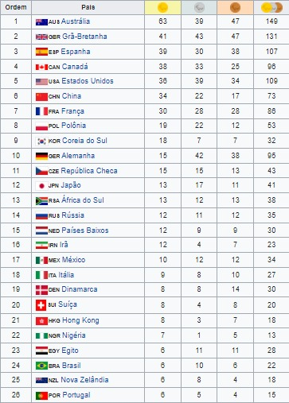

2000 Sydney, AustráliaO principal objetivo era o desenvolvimento uma rota e um evento que ajudasse manter um vincúlo entre os Jogos Olímpicos e Jogos Paralímpicos. A rota visitou a capital de cada estado da Austrália e tal como a tocha olímpica foi igualmente foi centrada na região metropolitana de Sydney,dando prioridade ás comunidades que não receberam o revezamento da Tocha Olímpica,e como esta era a área de principal para vendas de ingressos. A tocha foi acesa por um ritual aborígene nos jardins da Casa do Parlamento, em Canberra em 5 de Outubro.Modalidades→Atletismo→Basquetebol →Bocha →Ciclismo →Elevação →Levantamento de peso →Halterofilismo →Esgrima →Futebol de 7 →Goalball →Hipismo →Lawn bowls →Lutas →Natação →Snooker →Tênis de mesa →Tiro com Arco →Tiro →Voleibol Medalhas |